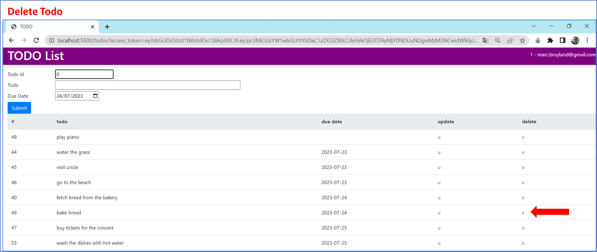
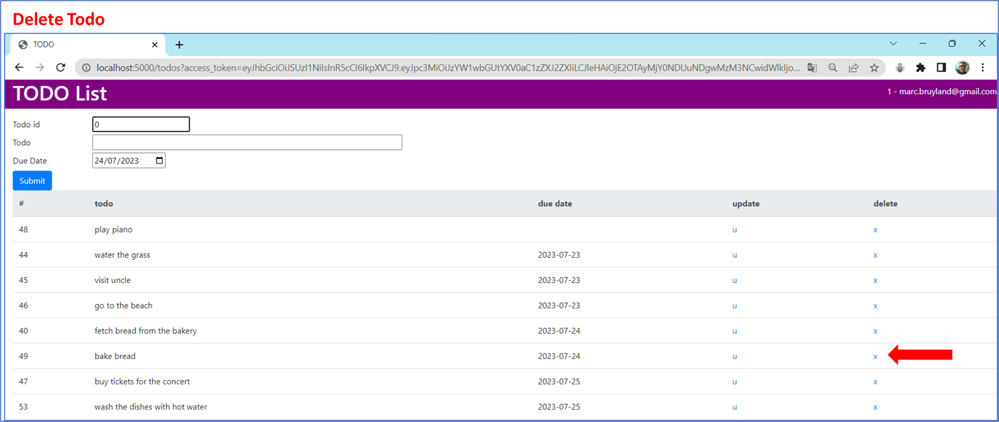

My portfolio.
Todo manager with authorization server (OAuth based)

This web application lets users manage their todo list. The application consists of 3 servers: a client server, an authorization server and a database server.

The following techniques were used:
the End-user
the Client server
the Authorization server
the Database server

A visual impression:

 

© 2023 Marc Bruyland.